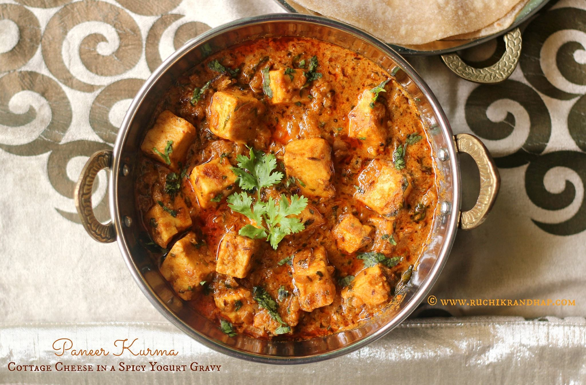

Recipe Book > Sabjis
Panner Kurma

Ingredients:
- 250g paneer (cottage cheese), cut into cubes
- 1 large onion, finely chopped
- 2 tomatoes, finely chopped
- 1/2 cup coconut, grated
- 1 tbsp ginger-garlic paste
- 2 green chilies, slit
- 1 tsp cumin seeds
- 1 tsp coriander powder
- 1/2 tsp turmeric powder
- 1/2 tsp red chili powder
- 1/2 tsp garam masala
- 2 tbsp oil
- Salt to taste
- Fresh coriander leaves, chopped (for garnish)
Instructions:
- Heat oil in a pan and add cumin seeds. Once they splutter, add chopped onions and sauté until golden brown.
- Add ginger-garlic paste and green chilies. Sauté for a minute.
- Add chopped tomatoes and cook until they become soft and oil starts separating.
- Add coriander powder, turmeric powder, red chili powder, and salt. Mix well.
- Grind the grated coconut into a smooth paste with a little water and add it to the pan. Cook for 5-7 minutes.
- Add paneer cubes and mix well. Cook for another 5 minutes, allowing the flavors to meld.
- Finish with garam masala and garnish with fresh coriander leaves. Serve hot with roti or rice.
Aloo Mattar

Ingredients:
- 2 large potatoes, peeled and diced
- 1 cup green peas (fresh or frozen)
- 1 large onion, finely chopped
- 2 tomatoes, finely chopped
- 1 green chili, finely chopped (optional)
- 1 tablespoon ginger-garlic paste
- 1 teaspoon cumin seeds
- 1 teaspoon mustard seeds
- 1 teaspoon turmeric powder
- 1 teaspoon coriander powder
- 1 teaspoon cumin powder
- 1 teaspoon garam masala
- 2 tablespoons vegetable oil
- Salt to taste
- Fresh cilantro for garnish
- 1 cup water
Instructions:
- Heat oil in a pan over medium heat. Add cumin seeds and mustard seeds, and let them sizzle.
- Add finely chopped onions and sauté until golden brown.
- Stir in the ginger-garlic paste and green chili (if using). Cook for 1-2 minutes.
- Add the chopped tomatoes, turmeric powder, coriander powder, and cumin powder. Cook until the tomatoes are soft and the oil starts to separate.
- Add the diced potatoes and green peas. Mix well to coat with the spices.
- Pour in the water and bring to a boil. Reduce the heat, cover the pan, and simmer until the potatoes and peas are tender (about 15-20 minutes).
- Once cooked, stir in garam masala and salt to taste. Simmer for a few more minutes.
- Garnish with fresh cilantro before serving.